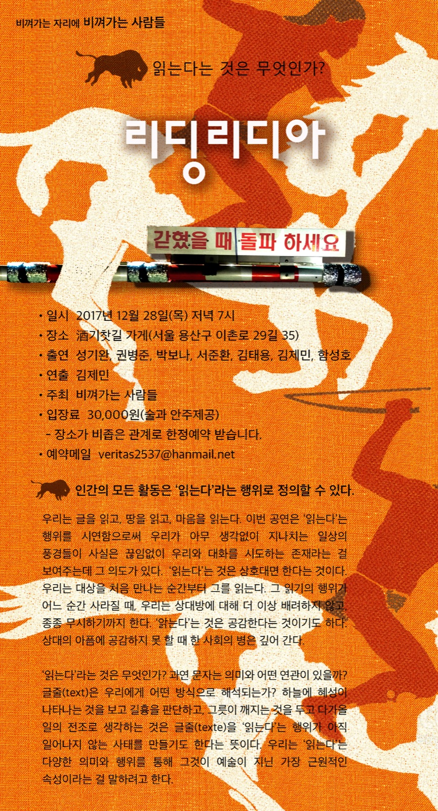

Performance — 2017
ReadingLydia리딩리디아 — 읽는다는 것은 무엇인가?
시인·소설가·음악가·건축가가 저마다의 ‘읽는다’는 행위를 만들어, 기찻길 옆 술집에서 15분씩 겹쳐가며 들려준다.
Poets, novelists, musicians, and an architect each invent their own act of ‘reading,’ unfolding in 15-minute segments that overlap through the night at a pub beside the railway tracks.
‘리딩(Reading)은 읽기이고, 리디아(Lydia)는 상상읽기다.’ ‘읽는다’라는 동사 하나를 두고 시·소설·미술·음악·건축의 예술가 일곱 명이 저마다의 ‘읽는다’는 행위를 창작하고 시연합니다. 우리가 무심코 지나치는 일상의 풍경들이 사실은 끊임없이 우리에게 말을 걸어오는 존재라는 것을, ‘읽는다’는 행위의 시연을 통해 보여주려는 기획입니다.
인간의 모든 활동은 ‘읽는다’는 행위로 정의할 수 있습니다. 우리는 글을 읽고, 땅을 읽고, 공간을 읽고, 때론 상대의 마음을 읽습니다. ‘읽는다’는 것은 인식의 차원에서 공감각적 행위의 차원으로 이행하며, 예술가들이 일상에서 자신의 무늬를 새기는 방식을 재정의합니다. 공연장 창밖으로는 실제 기찻길이 지나며, 열차가 지나는 소리와 진동이 그대로 공연의 일부가 됩니다.
‘Reading is to read; Lydia is to read imaginatively.’ Around the single verb ‘to read,’ seven artists working in poetry, fiction, visual art, music, and architecture each devise and perform their own act of reading — revealing that the everyday scenery we pass without notice is, in fact, ceaselessly trying to speak to us. All human activity, the project proposes, can be defined as an act of reading: we read text, we read land, we read space, and sometimes we read another’s heart. Reading shifts from a cognitive act to a synesthetic one, redefining how artists inscribe their own pattern onto daily life. Outside the venue’s window, an actual railway runs — the sound and tremor of passing trains become part of the performance itself.
- 연출
- Direction
- Kim Jae Min (김제민)
- 주최
- Organized by
- 비껴가는 사람들
- 출연
- Performers
- 권병준 · 김제민 · 김태용 · 박보나 · 서준환 · 성기완 · 함성호
- 키워드
- Keywords
- reading as performance · site-specific · overlapping structure · railway
프로그램 — 일곱 개의 ‘읽기’
Program — Seven Acts of Reading
겹쳐지는 7인의 낭독
Seven overlapping readings
01
권병준 — 그런 환상이 있어, 내가.
Kwon Byungjun — I Have Such a Delusion
음악·미디어아트. 얼굴인식과 드로잉을 결합한 실시간 렌더링으로 말하는 인형을 영사하고, 인형의 넋두리를 들려준다. 컨셉은 ‘은하철도 999’.
Music/media art. Face recognition and live drawing render a talking puppet, its murmurs projected — conceptually keyed to ‘Galaxy Express 999.’
02
서준환 — Hole (구멍, 구덩이)
Seo Junhwan — Hole
소설. 자작 원고의 서두와 에필로그를 낭독하고, 사이에 간주곡(개빈 브라이어스 ‘비엔나 무희’)이 흐른다.
Fiction. Reads the opening and epilogue of an original text, with Gavin Bryars’ ‘Vienna Dancers’ between as interlude.
03
박보나 — 모자
Park Bona — Hat
미술. 토마스 베른하르트의 소설 《모자》에서 영감을 얻어, 창밖 기찻길을 관리하는 철도원과 모자를 바꿔 쓰고 그가 좋아하는 시·노래를 낭독한다.
Visual art. Inspired by Thomas Bernhard’s ‘The Hat,’ swaps hats with the real railway worker outside the window and reads his favorite poems and songs.
04
함성호 — 못 돌아오는, 흘러간다
Ham Seongho — Not Returning, Flowing Away
건축·시. 첫 열차가 지나는 소리를 신호로, 라이프니츠의 미분계산 논문 첫 페이지를 낭독으로 이어받는다.
Architecture/poetry. Cued by the sound of the first passing train, picks up with a reading of the opening page of Leibniz’s paper on differential calculus.
05
김제민 — 연출 겸 퍼포머
Kim Jae Min — Director & Performer
일곱 개의 개별 퍼포먼스 사이 연결점을 설계하고, 스스로도 낭독자로 무대에 오른다.
Designs the connective tissue between all seven performances, and takes the stage as a reader himself.
06
김태용 — 물방울이 물보라를 일으킬 때까지
Kim Taeyong — Until the Droplet Raises a Splash
소설. 같은 구절을 주문처럼 반복하며 장소(기찻길)에 새로 쓴 산문시를 낭독한다.
Fiction. A prose poem written for the site, its refrain repeating like an incantation.
07
성기완 — 시자르기
Sung Kiwan — Cutting Poems
시인·음악가. 시를 소리로 잘라 겹치는 사운드 콜라주 퍼포먼스로 낭독을 마무리한다.
Poet/musician. Closes the night with a sound-collage performance that cuts and layers poetry into audio.
Structure
연결점을 잡는 것이 포인트
The point is finding the connective tissue
관객은 7시에 도착해 술과 안주를 즐기며 퍼포머들과 어울리고, 실제 공연은 8시 반 전후로 시작됩니다. 퍼포머는 각자 15분 안팎의 개별 퍼포먼스를 준비하지만, 순서대로 하나씩 끝나고 시작하는 대신 두 퍼포먼스가 항상 조금씩 겹치도록 60분에 걸쳐 이어집니다. 앞 퍼포먼스가 채 끝나기 전에 다음 퍼포먼스가 스며들고, 두 사람의 낭독·소리·움직임이 같은 공간에서 잠시 공존하는 순간마다 연출은 ‘연결점’을 세심하게 설계했습니다 — 박보나의 낭독이 첫 열차의 기적소리로 함성호의 낭독을 불러내듯이.
Audiences arrive at 7PM to drink and mingle with the performers before the show proper begins around 8:30. Each performer prepares roughly 15 minutes of solo material, but instead of running one after another, every two adjacent performances overlap across the full 60-minute structure — the next act seeping in before the last has finished, their voices and movements briefly coexisting in the same room. The director’s central task was designing these connective points with care, as when Park Bona’s reading is handed off to Ham Seongho’s by the whistle of the first passing train.
- 진행 순서
- Running Order
- 권병준 → 서준환 → 박보나 → 함성호 → 김제민 → 김태용 → 성기완
- Kwon → Seo → Park → Ham → Kim (Jae Min) → Kim (Taeyong) → Sung
- 참여 안내
- Note
- 좁은 공간의 특성상 모르는 관객과 동석할 수 있으며, 공연은 밤 10시경 마칩니다.
- Given the venue’s small size, audience members may be seated with strangers; the evening ends around 10PM.
A nameless pub by the railway tracks, Yongsan, Seoul — 2017